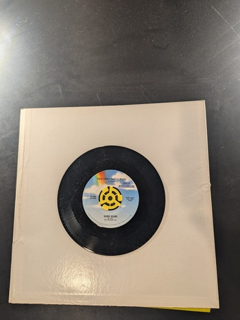

The World's Great Music
Tchaikovsky
The Standard Treasury 1
String Trio No. 2 (1933)
Hindemith
Westminster WF-9047
Fanfares from the Sixteenth Century to the Present
Unknown
Music Guild MS-120
Music for Voices and Viols in the Time of Shakespeare
Unknown
Music Guild MS-868

Sonatas for Harpsichord
Domenico Scarlatti
Westminster W-9341
Choro for Cello and Orchestra
Guarnieri
Westminster WST-17027
I Wish That I Had Said That
Smiley Burnette
Capitol 15117
The Pied Piper of Hamelin
Alec Templeton
RCA Victor 45-5166-B

The Pied Piper of Hamelin
Alice Templeton
RCA Victor 45-5167-A
Faust - Part 3
Dame May Whitty
RCA Victor 45-5135-B
Rapture (Part 1)
Dame May Whitty
RCA Victor 45-5134-A
Conga-Ep
Unknown
RCA Victor 45-5084-A
Christmas
Perry Como
RCA Victor 45-5063-A
These Hands (Small But Mighty)
Bobby Bland
MCA Records MCA-1448
A Fool in Love
Ike & Tina Turner
Collectables COL 3038
Twine Time
Alvin Cash & The Crawlers
Collectables COL 3064
Chinese Checkers
Booker T. & The MG's
Atlantic OS-13028
{kind=link}
{kind=link}
{kind=link}
{kind=link}

{kind=link}
{kind=link}
{kind=link}

{kind=link}
{kind=link}
{kind=link}
{kind=link}
{kind=link}
{kind=link}
{kind=link}
{kind=link}